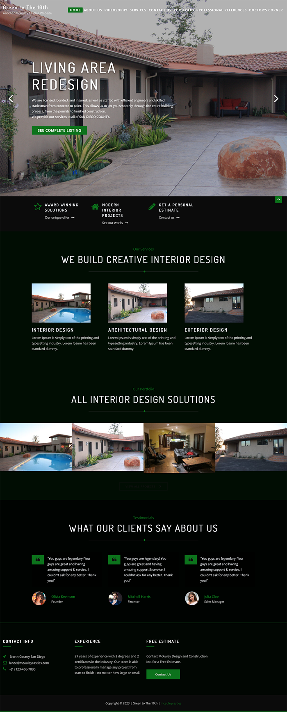

The GreenToThe10th website showcased content and design that was not reflective of their current services. GreenToThe10th was an outdated website and it needed a revamp, so I gave it a cosmetic facelift
The GreenToThe10th site hadn't been updated in a while, and there was a bunch of known customer pain points which needed to be addressed. My goal was to improve the user experience, modernise the aesthetic and increase sales.
My approach as a front-end developer for GreenToThe10th was to advocate for the user, and by putting the user first, we achieve business goals as a result. Having a wide range understanding of the following can assist in achieving strong user experience.
The client also wanted to have control over the website for future updates. Because of this, I decide to keep using WordPress.
The major problems I had to overcome in the design process were how to:
After a proper understanding of the issues, the main goals of the website redesign were established.
Some design challenges are harder than others, but when you have a great client to work with, it makes it that much easier to achieve your objective. I had a great time working with this client and I'm glad that I could help them create a brand and website that met their company needs.